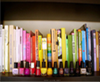

当前位置：毕业现场



作者 ：孙玉红
发布于2013-06-06
62
作者 ：孙兆风 田兆富
发布于2013-06-05
56
作者 ：谢婕
发布于2013-05-29
52
作者 ：李彦祺
发布于2013-05-27
55
作者 ：王洪平
发布于2013-05-27
54
作者 ：谢婕
发布于2013-05-21
54
作者 ：王东
发布于2013-05-20
44
作者 ：刘菲菲 赵敬光
发布于2013-05-16
27

・致青春
他不羁的脸，像天色将晚。
她洗过的发，像心中火焰。
短暂的狂欢，以为一生绵延。
漫长的告别，是青春盛宴。
她洗过的发，像心中火焰。
短暂的狂欢，以为一生绵延。
漫长的告别，是青春盛宴。
・睡在我上铺的兄弟
睡在我上铺的兄弟
无声无息的你
你曾经问我的那些问题
如今在没人问起
无声无息的你
你曾经问我的那些问题
如今在没人问起
・光阴的故事
春天的花开秋天的风
以及冬天的落阳
忧郁的青春年少的我
曾经无知的这么想
风车在四季轮回的歌里
以及冬天的落阳
忧郁的青春年少的我
曾经无知的这么想
风车在四季轮回的歌里
毕业离校前要做的20件事
1.不管你曾经多么内向，你一定 要在全班同学面前，认认真真地 讲一次话，或者唱一支歌，即使 你和开学时一样，再介绍一回你 自己也好。
2、拜访一回你最尊敬的老师吧， 在毕业时，认真地记住一条关于人 生的经验。
2、拜访一回你最尊敬的老师吧， 在毕业时，认真地记住一条关于人 生的经验。
得失满仓・回眸初定……